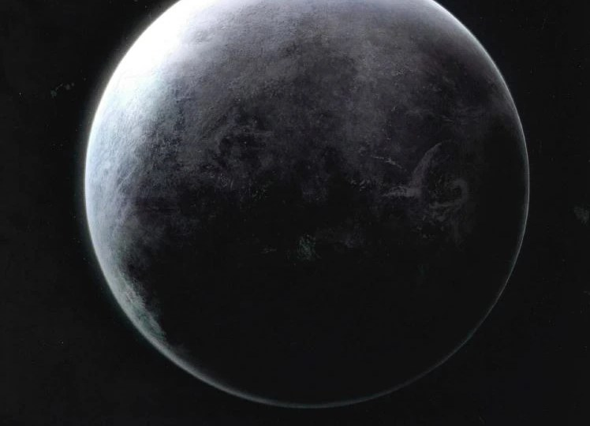
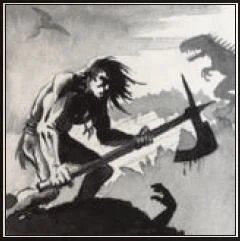

Feral world
| Feral world | |
|---|---|
| Class of Imperial world | |
 Chogoris, homeworld of the White Scars, recorded in Imperial archives as Mundus Planus Artwork © Games Workshop | |
| Administratum class | Feral world[a] |
| Typical tithe | Solutio grades or none; Aptus Non for Chapter recruiting worlds |
| Population | Thousands to a few hundred million, in tribes and clans |
| Technology | Stone to iron age; no industry |
| Imperial presence | Often none beyond a governor's outpost or a Chapter fortress |
| Examples | Fenris, Chogoris, Baal Secundus, Davin, Cretacia |
A feral world is a class of planet of the Imperium of Mankind whose human population lives in a primitive, usually tribal condition, without industry and often without writing. Feral worlders may be hunters, herders, raiders or nomads. Many such worlds were settled in the Dark Age of Technology and fell back into savagery during the Age of Strife, keeping only legends of their past.[1][2]
The Administratum usually leaves feral worlds in their primitive state. Their tithe is light or nothing, and the Imperium's interest in them is chiefly military: feral worlders are fierce and hardy, and are recruited by the Astra Militarum and above all by the Adeptus Astartes. Several of the most famous Space Marine Chapters, including the Space Wolves of Fenris and the White Scars of Chogoris, recruit from feral or near-feral peoples.[3][4]
Characteristics
[edit]Feral worlds vary greatly. Some are temperate and fertile, others are also death worlds, and the Administratum frequently records both classes for one planet. What they have in common is a population without industrial technology, organised in tribes, clans or warbands under chiefs, shamans or warlords. Feral worlders often worship gods of their own, and Imperial preachers of the Imperial Cult are sometimes sent to bring them to the faith, though many Chapters forbid interference in the customs of their recruiting worlds.[2][5]
A feral world differs from a feudal world in that it has no settled kingdoms, castles or agriculture on any great scale. The line between the two is not always clear: Chogoris, for example, has been recorded as feral, as feudal and as a Legion homeworld at different times.[2]

Relations with the Imperium
[edit]On most feral worlds the Imperium is represented only by a small outpost of the planetary governor, who may rule in name alone. The governor's task is to keep the world loyal, to protect it from xenos raiders and heresy, and to supply recruits when the tithe falls due. Off-worlders are usually forbidden to trade advanced technology with feral peoples.[1]
Space Marine Chapters prize feral worlds as recruiting grounds because their warriors are used to danger and hardship from birth. Some Chapters live openly among the tribes and are revered as gods or spirits; others watch from orbit and take aspirants only after trials. The Codex Astartes recommends a feral or death world as the ideal Chapter homeworld.[3]
The Astra Militarum raises feral regiments for assault and irregular warfare, though their soldiers often have to be taught to use basic Imperial weapons. Some feral regiments are kept together for generations and develop traditions of their own.[4]
Notable feral worlds
[edit]| World | Notes |
|---|---|
| Fenris | Ice and ocean world; its tribes provide aspirants for the Space Wolves; also a death world; homeworld of Leman Russ, found there by the Emperor in 819.M30 |
| Chogoris | Steppe world of horse nomads in the Yasan Sector; homeworld of Jaghatai Khan, who united its tribes before the Emperor arrived in 865.M30; recruiting world of the White Scars |
| Baal Secundus | Radiation desert moon of Baal; tribes that provide aspirants for the Blood Angels; scoured by Hive Fleet Leviathan in 999.M41 |
| Davin | Feral world of the Segmentum Obscurus where Horus was wounded and turned to Chaos on the eve of the Horus Heresy (c. 004.M31) |
| Cretacia | Jungle world of giant reptiles; recruiting world of the Flesh Tearers |

History
[edit]Most feral worlds were once more advanced. Imperial surveys have found the ruins of Dark Age cities on many of them, and the tribes often keep garbled memories of their ancestors. In the Great Crusade (c. 798.M30–005.M31) many were brought to compliance with little bloodshed, since their peoples could not resist the Imperial armies; some were found to have been raised by a lost primarch.[6]
Since the opening of the Great Rift in 999.M41 feral worlds have suffered heavily. Lacking defences of their own, they depend on the Chapters and garrisons that watch over them, and several have been depopulated by invasion. The losses suffered by Baal Secundus in the Devastation of Baal in 999.M41 are the best known.[7]
Culture
[edit]Feral worlders commonly live by oral tradition, keeping the history of their people in songs, sagas and genealogies. Honour, strength and courage in battle are the virtues most valued, and tests of manhood or womanhood are common. On Fenris the tribes honour great deeds in sagas, and those taken by the Space Wolves are believed to have gone to the halls of the Allfather; on Chogoris the clans of the steppe honour the horse, the bow and the open sky. Imperial observers note that feral peoples who have long contact with a Chapter often worship its warriors as gods or spirits, a belief the Ecclesiarchy tolerates where it does not contradict the Imperial Cult.[3][5]
Timeline
[edit]| Date | Event |
|---|---|
| Age of Technology | Feral worlds are settled by colonists who lose their technology as contact with Terra fades.[b] |
| Age of Strife | Feral peoples keep their oral histories and tribal orders through the collapse of the Human worlds.[c] |
| Late M30 | The Great Crusade finds feral worlds and brings the tribes into the Imperium, often by the arrival of a Space Marine Legion.[d] |
| 211.M31 | Leman Russ leaves Fenris for the Eye of Terror, and the Fenrisian tribes are left to the Space Wolves. |
| M31–M32 | Feral worlds are caught in the Horus Heresy, and some tribes are recruited into the Traitor and Loyalist armies.[e] |
| M36 | The Plague of Unbelief reaches the feral worlds of the galactic rim.[f] |
| M41 | Feral worlds supply recruits to the Chapters and the Astra Militarum in the Time of Ending.[g] |
| Early M42 | Feral worlds remain under the Adeptus Astartes who first contacted them, and their tribes continue to worship the Chapters' warriors. |
See also
[edit]Notes
[edit]- ^ No numeric classification code is recorded in the open registry.
- ^ Estimated; no record gives an exact year.
- ^ Estimated; no record gives an exact year.
- ^ Estimated; no record gives an exact year.
- ^ Estimated; no record gives an exact year.
- ^ Estimated; no record gives an exact year.
- ^ Estimated; no record gives an exact year.
References
[edit]- ^ a b Warhammer 40,000 Rulebook (6th Edition), pg. 153. Games Workshop.
- ^ a b c Warhammer 40,000: Rogue Trader (1st Edition), pg. 134. Games Workshop.
- ^ a b c Imperial Armour Volume One - Imperial Guard & Imperial Navy, pp. 10-12.
- ^ a b Imperial Armour Volume Five - The Siege of Vraks - Part One.
- ^ a b White Dwarf 305 (UK), pp. 64-65.
- ^ [https://www.warhammer-community.com/2018/10/19/20th-oct-500-facts-for-500-stores/ 500 Facts for 500 Stores! - Fact 45, Fact 46].
- ^ Dark Heresy Core Rulebook (RPG), pp. 249-250.